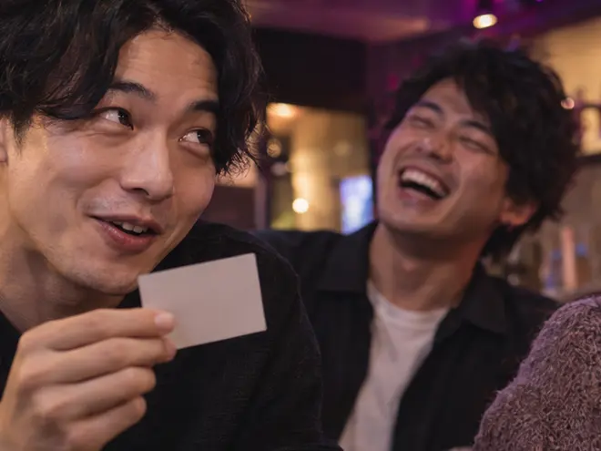
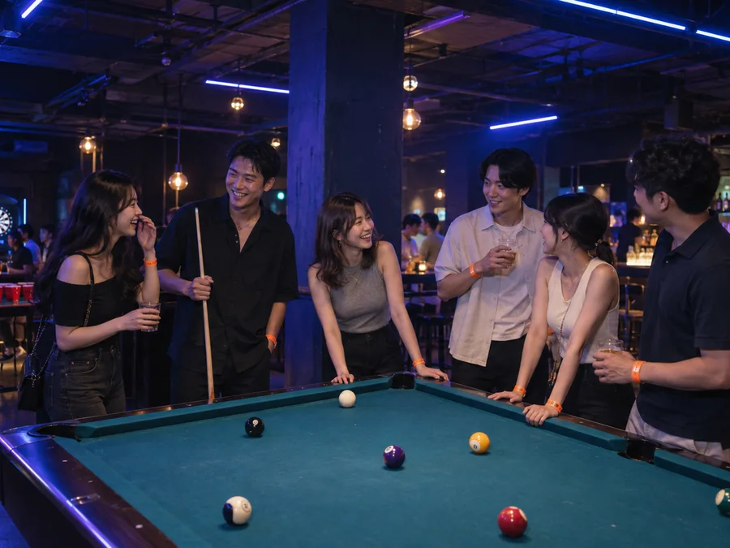

01いつもと違う刺激
いつものように飲んで話す夜に「次はどうなる？」というワクワクを。
思わず笑ったり 予想外の展開に驚いたり。先が読めないからこそ夢中になるいつもとひと味違う夜をASOBIBARで。

見るだけじゃない
あなたが参加する
恋愛リアリティショー
ASOBIBARで実際に参加できる、恋愛リアリティ体験です。

いつものように飲んで話す夜に「次はどうなる？」というワクワクを。
思わず笑ったり 予想外の展開に驚いたり。先が読めないからこそ夢中になるいつもとひと味違う夜をASOBIBARで。
一緒に笑った瞬間やふと見えた相手の意外な表情。
何気ない会話だけでは気づかなかった魅力にドキッとすることも。「もう少し話してみたい」そんな気持ちが生まれるきっかけに。

画面越しに見ていた恋愛リアリティショー。今夜は あなた自身がその中へ。
誰かの展開を見守るドキドキを自分の気持ちが動くドキドキへ。いつもの日常から少し離れて思わず誰かに話したくなる一夜を。
チャイムが鳴ると そこからお題が出されます。何が始まるかは その瞬間まで分かりません。
4〜6GROUPS CROSS
そこから、最大4〜6組のグループが交差します。
2026 OCTOBER10.01 — 10.31
店舗を選ぶと その店舗の公式LINEが開きます。